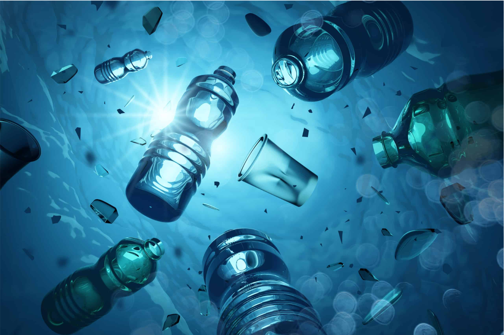
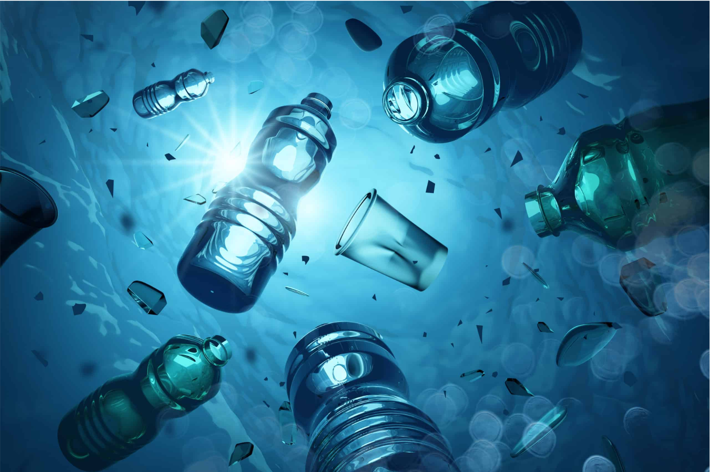
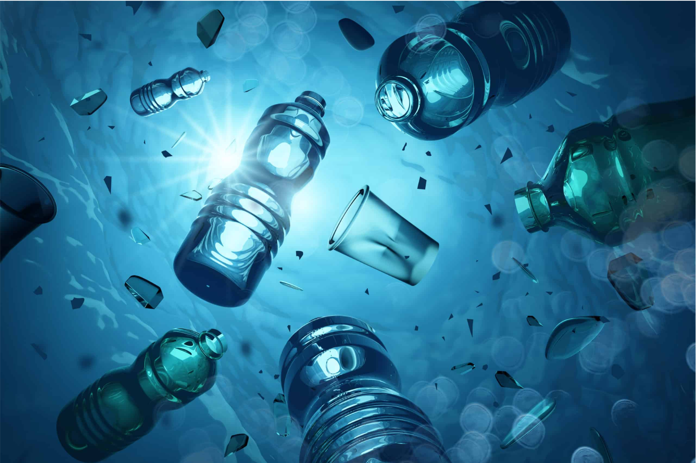
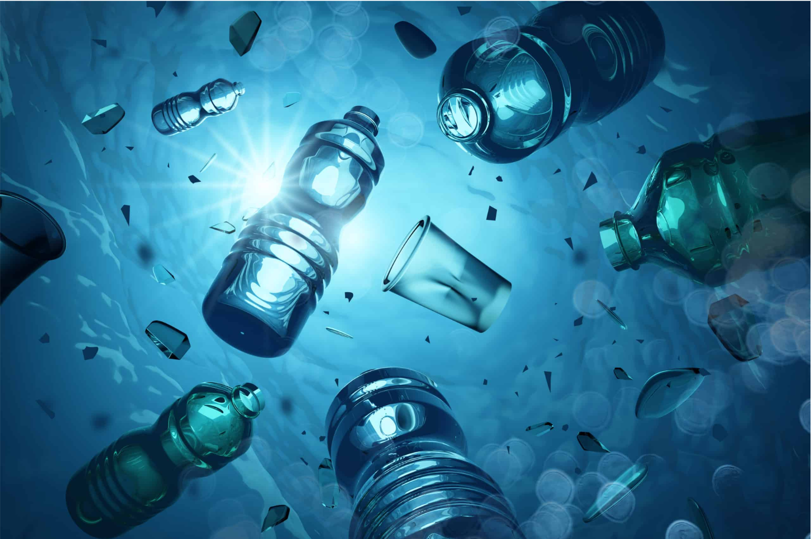

.png) 

Es hora de que dejemos una huella en la
historia
GreenFlip
GREENFLIP ES LA EMPRESA PIONERA DEL RECICLAJE DEL 2024
ÚNETE Y HAZ UN CAMBIO POSITIVO AL MEDIO AMBIENTE


Estamos aquí para asistirte en el proceso de reciclaje que tu empresa requiera. Juntos, podemos reducir el uso de productos de un solo uso y fomentar la reutilización de los materiales, contribuyendo así a un entorno más sostenible y eficiente.
Recoge plásticos usados de diversas fuentes, como residuos domésticos, industriales o comerciales, y los clasifica según el tipo de plástico (PET, HDPE, PP, etc.) para asegurar un reciclaje adecuado.
Transforma el plástico triturado en materia prima reutilizable mediante procesos como la extrusión, moldeo por inyección o soplado.
Utiliza la materia prima reciclada para diseñar y fabricar nuevos objetos, como envases, muebles, textiles, o cualquier otro producto que pueda ser creado a partir del plástico reciclado.
En GreenFlip, transformamos plásticos usados en productos sostenibles y de alta calidad. Nuestro enfoque está en reducir la contaminación plástica y promover una economía circular, utilizando tecnología avanzada para reciclar y reinventar el plástico. Con un equipo comprometido de expertos en sostenibilidad y diseño, damos una nueva vida a los residuos plásticos, creando soluciones innovadoras que ayudan a cuidar el planeta. GreenFlip: cambiando el futuro, un plástico a la vez.
.png)
.png)
.png)
.png)
.png)
.png)
GreenFlip se compromete a disminuir la cantidad de plástico que termina en vertederos y océanos mediante la recolección y reciclaje de materiales plásticos usados. Nuestro objetivo es transformar residuos en recursos valiosos, reduciendo la dependencia de plásticos vírgenes y contribuyendo a un entorno más limpio.
.png)
Buscamos cerrar el ciclo del plástico a través de un modelo de economía circular, en el que los productos son diseñados, fabricados, utilizados y reciclados continuamente. GreenFlip trabaja para integrar el reciclaje en cada etapa de la cadena de producción, colaborando con empresas y comunidades para dar un uso prolongado y sostenible a los plásticos.
.png)
Nos enfocamos en la innovación continua para desarrollar productos reciclados de alta calidad que no solo sean funcionales, sino también estéticamente atractivos y duraderos. A través de la investigación y el desarrollo, GreenFlip busca liderar en la creación de soluciones que redefinan el uso de materiales reciclados, demostrando que la sostenibilidad y el diseño pueden ir de la mano.
.png)
.png)
.png)
.png)
.png)
¿Está interesado en convertirse en uno de nuestros clientes? Esto es todo lo que tenemos para ofrecerle.
Todos los derechos reservados para ©GreenFlip